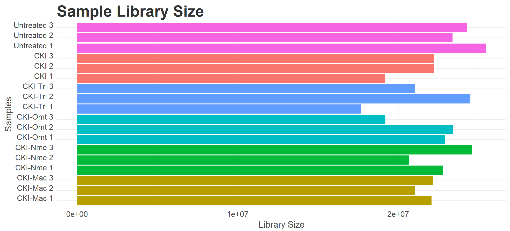
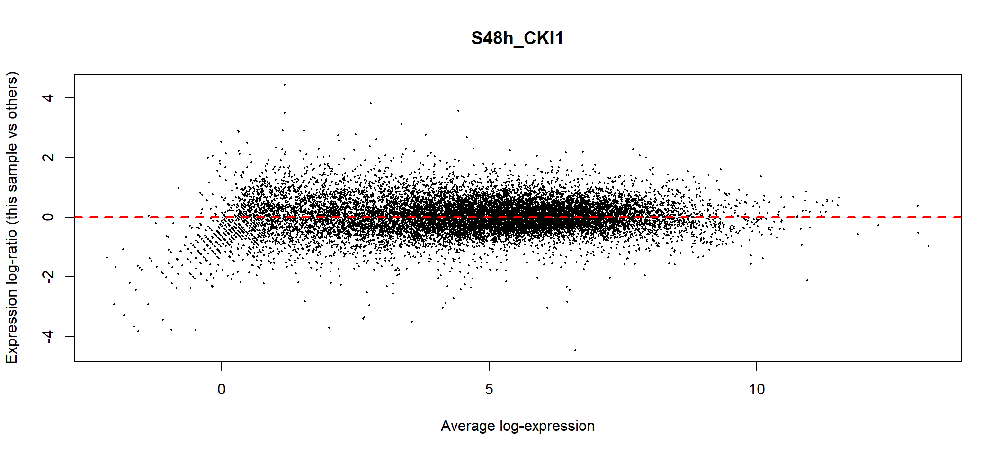
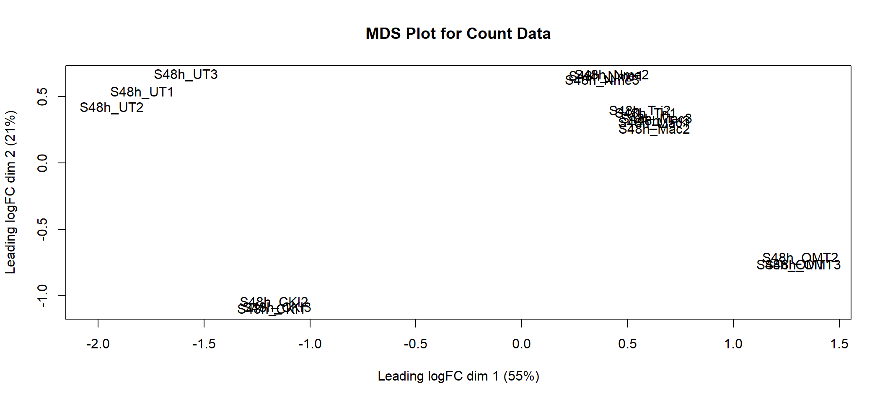
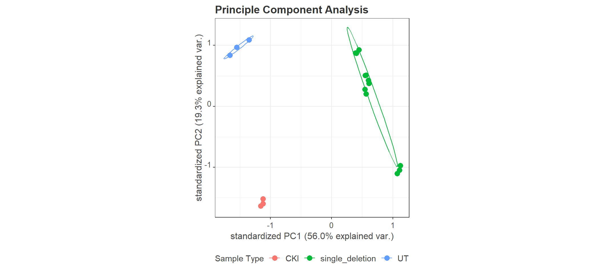
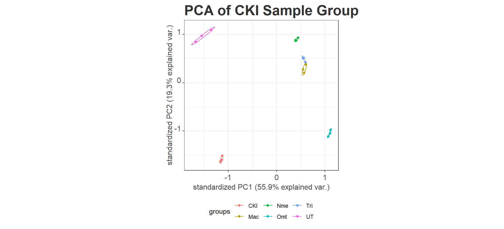

Set Up for DE Analysis
Ha Tran
20/08/2021
Last updated: 2021-10-30
Checks: 5 2
Knit directory: 01_CKI_DGE/1_analysis/
This reproducible R Markdown analysis was created with workflowr (version 1.6.2). The Checks tab describes the reproducibility checks that were applied when the results were created. The Past versions tab lists the development history.
The R Markdown file has unstaged changes. To know which version of the R Markdown file created these results, you’ll want to first commit it to the Git repo. If you’re still working on the analysis, you can ignore this warning. When you’re finished, you can run wflow_publish to commit the R Markdown file and build the HTML.
The global environment had objects present when the code in the R Markdown file was run. These objects can affect the analysis in your R Markdown file in unknown ways. For reproduciblity it’s best to always run the code in an empty environment. Use wflow_publish or wflow_build to ensure that the code is always run in an empty environment.
The following objects were defined in the global environment when these results were created:
| Name | Class | Size |
|---|---|---|
| comparison_group | data.frame | 1.1 Kb |
| contrast | matrix;array | 1.7 Kb |
| designMatrix | matrix;array | 3.5 Kb |
| dge | DGEList | 12 Mb |
| enrichGO_treat | list | 742 Kb |
| enrichKEGG_treat | list | 491.5 Kb |
| enrichKEGG_treat_sig | list | 89.2 Kb |
| entrezID | list | 8.7 Kb |
| estimateDispersion | DGEList | 12.5 Mb |
| fit_GLM_qlf | DGEGLM | 20.6 Mb |
| GOresults | enrichResult | 123.8 Mb |
| goSummaries | tbl_df;tbl;data.frame | 13.4 Mb |
| i | integer | 56 bytes |
| kegg_id | character | 120 bytes |
| kegg_pathway | list | 51.2 Kb |
| kegg_pathway_name | character | 152 bytes |
| KEGGresults | enrichResult | 2.3 Mb |
| match | logical | 912 bytes |
| matrix | list | 13 Kb |
| matrix_merged | data.frame | 1.8 Kb |
| minPath | numeric | 56 bytes |
| my_palette | character | 12.6 Kb |
| qlf | list | 101 Mb |
| qlf_decideTest | list | 5.6 Kb |
| qlf_filtered | list | 37.5 Mb |
| qlf_unfiltered | list | 49.2 Mb |
| treat | list | 96.1 Mb |
| treat_decideTest | list | 5.6 Kb |
| treat_filtered | list | 1.7 Mb |
| treat_unfiltered | list | 49.2 Mb |
| x | character | 120 bytes |
The command set.seed(12345) was run prior to running the code in the R Markdown file. Setting a seed ensures that any results that rely on randomness, e.g. subsampling or permutations, are reproducible.
Great job! Recording the operating system, R version, and package versions is critical for reproducibility.
Nice! There were no cached chunks for this analysis, so you can be confident that you successfully produced the results during this run.
Great job! Using relative paths to the files within your workflowr project makes it easier to run your code on other machines.
Great! You are using Git for version control. Tracking code development and connecting the code version to the results is critical for reproducibility.
The results in this page were generated with repository version f94a382. See the Past versions tab to see a history of the changes made to the R Markdown and HTML files.
Note that you need to be careful to ensure that all relevant files for the analysis have been committed to Git prior to generating the results (you can use wflow_publish or wflow_git_commit). workflowr only checks the R Markdown file, but you know if there are other scripts or data files that it depends on. Below is the status of the Git repository when the results were generated:
Ignored files:
Ignored: .Rhistory
Ignored: .Rproj.user/
Ignored: 2_plots/3_go/
Ignored: 2_plots/4_kegg/
Untracked files:
Untracked: 1_analysis/about.html
Untracked: 1_analysis/dge.html
Untracked: 1_analysis/go.html
Untracked: 1_analysis/kegg.html
Untracked: 1_analysis/obtainData.html
Untracked: 1_analysis/site_libs/
Unstaged changes:
Modified: 1_analysis/_site.yml
Modified: 1_analysis/index.html
Modified: 1_analysis/setUp.Rmd
Deleted: 1_analysis/setUp.html
Modified: 2_plots/2_dge/estimate_dispersion.svg
Modified: 2_plots/2_dge/qlf_dispersion.svg
Modified: 2_plots/2_dge/qlf_pValue_histogram_CKI-Mac vs CKI.svg
Modified: 2_plots/2_dge/qlf_pValue_histogram_CKI-Nme vs CKI.svg
Modified: 2_plots/2_dge/qlf_pValue_histogram_CKI-Omt vs CKI.svg
Modified: 2_plots/2_dge/qlf_pValue_histogram_CKI-Tri vs CKI.svg
Modified: 2_plots/2_dge/qlf_pValue_histogram_UT vs CKI.svg
Modified: 2_plots/2_dge/treat_pValue_histogram_CKI-Mac vs CKI.svg
Modified: 2_plots/2_dge/treat_pValue_histogram_CKI-Nme vs CKI.svg
Modified: 2_plots/2_dge/treat_pValue_histogram_CKI-Omt vs CKI.svg
Modified: 2_plots/2_dge/treat_pValue_histogram_CKI-Tri vs CKI.svg
Modified: 2_plots/2_dge/treat_pValue_histogram_UT vs CKI.svg
Modified: 3_output/enrichGO_treat.xlsx
Modified: 3_output/enrichKEGG_treat_unfiltered.xlsx
Modified: 3_output/qlf_filtered.xlsx
Modified: 3_output/treat_filtered.xlsx
Note that any generated files, e.g. HTML, png, CSS, etc., are not included in this status report because it is ok for generated content to have uncommitted changes.
These are the previous versions of the repository in which changes were made to the R Markdown (1_analysis/setUp.Rmd) and HTML (docs/setUp.html) files. If you’ve configured a remote Git repository (see ?wflow_git_remote), click on the hyperlinks in the table below to view the files as they were in that past version.
| File | Version | Author | Date | Message |
|---|---|---|---|---|
| html | f94a382 | Ha Tran | 2021-10-30 | rerun website building to no avail. will it still work on github? |
| Rmd | a6d8f8a | Ha Tran | 2021-10-30 | what is happening |
| html | a6d8f8a | Ha Tran | 2021-10-30 | what is happening |
| Rmd | d769a7c | Ha Tran | 2021-10-30 | Upload GO and KEGG analysis |
| html | d769a7c | Ha Tran | 2021-10-30 | Upload GO and KEGG analysis |
| Rmd | 67e2d67 | Ha Tran | 2021-10-29 | copied code from old workflow for setup and dge |
| html | 67e2d67 | Ha Tran | 2021-10-29 | copied code from old workflow for setup and dge |
Data Setup
Load Library
# working with data
library(dplyr)
library(magrittr)
library(readr)
library(tibble)
library(reshape2)
library(tidyverse)
# Visualisation:
library(kableExtra)
library(ggbiplot)
library(ggrepel)
library(grid)
library(cowplot)
# Bioconductor packages:
library(AnnotationHub)
library(edgeR)
library(limma)
library(Glimma)
library(enrichplot)
# Set ggplot theme
theme_set(theme_bw())
theme_update(legend.background = element_rect(fill = "transparent", colour = NA),
legend.box.background = element_rect(fill = "transparent", colour = NA),
panel.background = element_rect(fill = "transparent",colour = NA),
plot.background = element_rect(fill = "transparent", colour = NA),
plot.title = element_text(color = "gray20", size = 22, angle = 0, hjust = 0, vjust = .5, face = "bold"),
axis.text.x = element_text(color = "gray30", size = 12, angle = 0, hjust = .5, vjust = .5, face = "plain"),
axis.text.y = element_text(color = "gray30", size = 12, angle = 0, hjust = 1, vjust = 0, face = "plain"),
axis.title.x = element_text(color = "gray30", size = 12, angle = 0, hjust = .5, vjust = 0, face = "plain"),
axis.title.y = element_text(color = "gray30", size = 12, angle = 90, hjust = .5, vjust = .5, face = "plain"))Data Import
Import Raw Count Data
# raw count data was altered prior to import into R. alterations made were removing number column, removing unnecessary columns, and substituting ws delim to tab delim
rawCount <- read_tsv("../0_data/raw_data/GSE125743_raw_count.tsv",
col_names = TRUE) %>%
column_to_rownames("Geneid") %>%
as.data.frameMetadata
There are generally two metadata required for DGE analysis.
metadata about each sample
metadata about each gene
Sample Metadata
The sample metadata can be extracted from the GSE125743_raw_count.tsv column names. These data include sample_id, sample_group, sample_type.
Current Challenges
1. using obtaining sample_group, sample_type through regex 2. using conditional to add suffix of the coloumns
Due to these unresolved issues, the sample metadata will be manually generated and stored in the CKI_DGE/0_data/raw_data/ directory
sampleMetadata <- read_tsv("../0_data/raw_data/sample_metadata.tsv",
col_names = TRUE) %>%
column_to_rownames("treatment") %>%
as.data.frameGene Metadata
- Gene annotation is useful for the latter DGE analysis as it will provide useful information about the genes. The annotated genes of Homo sapiens can be pulled down by using Annotation Hub.
- Annotation Hub also has a web service that can be assessed through the display function. Pulling down the gene annotation can take a long time, so after the initial run, the annotated genes is saved to a
genes.rdsfile. To save time, ifgenes.rdsis already present, don’t run the code chunk.
ah <- AnnotationHub()
ah %>%
subset(grepl("sapiens", species)) %>%
subset(rdataclass == "EnsDb")
#viewing web service for annotation hub
#d <- display(ah)
#Annotation hub html site was used to identify 'code' for the latest human genome from Ensembl
ensDb <- ah[["AH95744"]]
genes <- genes(ensDb) %>%
as.data.frame()
#the annotated genes are saved into a RDS object to save computational time in subsequent run of the setUp.Rmd
genes %>% saveRDS("../0_data/rds_object/genes_metadata.rds")Using the annotated gene list through AnnotationHub(), load into object called geneMetadata. Filter out all genes that are present in the rawCount and display the number of unique gene_biotypes present in the rawCount and geneMetadata
genesMetadata <- read_rds("../0_data/rds_object/genes_metadata.rds")
#prepare the gene data frame to contain the genes listed in the rownames of 'rawCount' data
genesMetadata <- data.frame(gene = rownames(rawCount)) %>%
left_join(genesMetadata %>% as.data.frame,
by = c("gene"="symbol")) %>%
dplyr::distinct(gene, .keep_all=TRUE)
#make the gene column the row names
rownames(genesMetadata) <- genesMetadata$gene
#Using the table function, the details of the genes present in the rawCount data can be summaried.
genes <- genesMetadata$gene_biotype %>% table %>% as.data.frame()
kable(genes) %>% kable_styling(bootstrap_options = c("striped", "hover")) %>% scroll_box(height = "600px")| . | Freq |
|---|---|
| IG_V_gene | 1 |
| IG_V_pseudogene | 1 |
| lncRNA | 3261 |
| LRG_gene | 175 |
| miRNA | 1839 |
| misc_RNA | 6 |
| polymorphic_pseudogene | 32 |
| processed_pseudogene | 144 |
| protein_coding | 18642 |
| ribozyme | 1 |
| rRNA | 5 |
| scaRNA | 19 |
| scRNA | 1 |
| snoRNA | 419 |
| snRNA | 10 |
| TEC | 14 |
| transcribed_processed_pseudogene | 100 |
| transcribed_unitary_pseudogene | 79 |
| transcribed_unprocessed_pseudogene | 406 |
| translated_unprocessed_pseudogene | 1 |
| unitary_pseudogene | 5 |
| unprocessed_pseudogene | 117 |
| vault_RNA | 1 |
Create DGEList object
Digital Gene Expression List (DGElist) is a R object class often used for differential gene expression analysis as it simplifies plotting, and interaction with data and metadata.
The DGEList object holds the three dataset that have imported/created, including rawCount data and sampleMetadata and geneMetadata metadata.
To further save time and memory, genes that were not expressed acrossed all samples (i.e., 0 count across all columns) are all removed
#Create DGElist with rawCOunt and gene data. Remove all genes with 0 expression in all treatment groups
dge <- edgeR::DGEList(
counts = rawCount,
samples = sampleMetadata,
genes = genesMetadata,
remove.zeros = TRUE)5207 non expressed genes (rows) were removed.
Pre-processing and Quality Checks
Pre-processing steps increased the power of the downstream DGE analysis by eliminating majority of unwanted variance that could obscure the true variance caused by the differences in sample conditions. There are several standard steps that are commonly followed to pre-process and QC raw read counts, including:
Checking Library Size
Removal of Undetectable Genes
Normalisation
QC through MDS/PCA
Checking Library Size
A simple pre-processing/QC step is checking the quality of library size (total number of mapped and quantified reads) for each treatment. This enable identification of potentially mis-labeled or outlying samples. This is often visualised through ggplot.
dge$samples %>%
#plot the sample with the lib.size in x and sample_group in y, colour fill for each sample_group
ggplot(aes(
x = lib.size,
y = pretty_name,
fill = sample_group)
) +
geom_col() +
#draw a vertical line for the mean lib.size
geom_vline(
aes (xintercept = lib.size),
data = . %>% summarise_at(vars(lib.size), mean),
linetype = 2
) +
theme(legend.position = "none") +
#labelling splot
labs(title = "Sample Library Size",
x = "Library Size",
y = "Samples"
)
#save the plot to .svg
ggsave(filename = "library_size.svg",
plot = last_plot(),
path = "../2_plots/1_setup/")It appears that CKI-Tri treatment group
Removal of Low-Expressed Genes
Filtering out low-expressed genes is a standard pre-processing step in DGE analysis as it can significantly increase the power to differentiate differentially expressed genes by eliminating the variance caused by genes that are lowly expressed in all samples.
The threshold of removal is arbitrary and is often determined after visualisation of the count distribution. The count distribution can be illustrated in a density plot through ggplot. A common metric used to display the count distribution if log Counts per Million (logCPM)
beforeFiltering <- dge %>%
#transform the raw count to logCPM
edgeR::cpm(log = TRUE) %>%
#melting (reorganising) the transformed logCPM data with respect to the id variable (i.e., the row and column names). Very similar to pivot_long fucntion
melt %>%
#retain all rows where the logCPM (value) is finite. ALl of them in this case are finite
dplyr::filter(is.finite(value)) %>%
#plot the long formate logCPM counts in a density plot with x the logCPM and colour by the sample_id
ggplot(aes(
x = value,
colour = Var2
)) +
geom_density() +
#remove the legend
guides(colour = FALSE) +
#add figure tittle and subtitle and labels
ggtitle("Before Filtering Low-expressed Genes", subtitle = paste0(nrow(dge), " genes"))+
labs(
x = "logCPM",
y = "Density",
colour = "Sample Groups"
)
#save plot
# ggsave(filename = "counts_before_filtering.svg",
# plot = beforeFiltering,
# path = "../2_plots/1_setup/")Ideally, the filtering the low-expressed genes should remove the large peak with logCPM < 0, i.e., remove any genes which have less than one count per million.
A common guideline is to keep all genes that have > 1 cpm in the smallest group on a treatment. In this case, the smallest group is 3 as each treatment condition had three replicates. Therefore any genes that is more than 1 CPM in at least 3 samples is kept. Mathematically this would be identifying genes (rows) with CPM > 1; and identifying total row sum that is >= 3.
#kept genes old method
# keep <- edgeR::filterByExpr(y = dge,)
#the genes kept have >1 CPM for at least 3 samples
keptGenes <- (rowSums(cpm(dge) > 1.5) >= 3)
afterFiltering <- dge %>%
#transform the raw count to logCPM
edgeR::cpm(log = TRUE) %>%
#for var1 (gene names) extract only the keptGenes and discard all other genes in the logCPM data
magrittr::extract(keptGenes,) %>%
#melting (reorganising) the transformed logCPM data with respect to the id variable (i.e., the row and column names). Very similar to pivot_long fucntion
melt %>%
#retain all rows where the logCPM (value) is finite. ALl of them in this case are finite
dplyr::filter(is.finite(value)) %>%
#ggplot
ggplot(aes(
x = value,
colour = Var2
)) +
geom_density() +
#remove the legend
guides(colour = FALSE) +
#add figure tittle and subtitle and labels. since keptGenes is a logic element, the second element represents the number of genes that were kept after the filtering
ggtitle("After Filtering Low-expressed Genes", subtitle = paste0(table(keptGenes)[[2]], " genes")) +
labs(
x = "logCPM",
y = "Density",
colour = "Sample Groups"
)
#save plot
# ggsave("counts_after_filtering.svg",
# plot = afterFiltering,
# path = "../2_plots/1_setup/")
#display plot side by side
beforeAfterFiltering <- cowplot::plot_grid(beforeFiltering, afterFiltering)
#save plot
ggsave("counts_before_and_after_filtering.svg",
width = 18,
plot = beforeAfterFiltering,
path = "../2_plots/1_setup/")
#display side by side figure
beforeAfterFiltering
Following the filtering of low-expressed genes < 1.5 CPM in at least 3 samples, out of the total 22771 genes left after the removal of genes with no expression, 9512 genes were removed, leaving only 13259 genes remaining for the downstream analysis
Subset the DGElist object
After filtering the low-expressed genes, the DGElist object is updated to eliminate the low-expressed genes from future analysis
#extract genes from keptGenes and recalculate the lib size
dge <- dge[keptGenes,,keep.lib.sizes = FALSE]Normalisation
Using the TMM (trimmed mean of M value) method of normalisation through the edgeR package. The TMM approach creates a scaling factor as an offset to be supplied to Negative Binomial model. The calcNormFactors function calculate the normalisation and return the adjusted norm.factor to the dge$samples element.
Before Normalisation
#before normalisation
dge$samplesAfter Normalisation
#after normalisation
dge <- edgeR::calcNormFactors(object = dge,
method = "TMM")
dge$samplesVisualisation of TMM Normalisation
The following visualisation of the TMM normalisation is plotted using the mean-difference (MD) plot. The MD plot visualise the library size-adjusted logFC between two samples (the difference) against the log-expression across all samples (the mean). In this instance, sample 1 is used to compare against an artificial library construct from the average of all the other samples
limma::plotMD(cpm(dge, log = TRUE), column=1)
abline(h=0, col="red", lty=2, lwd=2) Ideally, the bulk of gene expression following the TMM normalisation should be centred around expression log-ratio of 0, which indicates that library size bias between samples have been successfully removed. This should be repeated with all the samples in the dge object.
Quality Control
Multi Dimensional Scaling (MDS)
Multiple dimension reduction method to assess clustering of samples
# #interactive MDS
# glMDSPlot(dge,
# labels = dge$samples$sample,
# groups = dge$samples$sample_group,
# folder = "../5_plots/1_QC_plots/")
#non-interactive MDS plot
mdsPlot <- limma::plotMDS(dge,
main = "MDS Plot for Count Data",
top = 500,
labels = colnames(dge$counts),
col = as.numeric(dge$samples$sample_id),
plot = TRUE)
Pinciple Component Analysis (PCA)
PCA Analysis
# Perform PCA analysis:
pcaAnalysis <- prcomp(t(cpm(dge, log=TRUE)))
summary(pcaAnalysis)$importance %>% as.data.frame()PCA of Sample Type
# Create the plot:
pcaSampleType <- ggbiplot(pcaAnalysis,
groups = dge$samples$sample_type,
ellipse = TRUE,
var.axes = FALSE) +
labs(title = "PCA of CKI Sample Type") +
theme(legend.position = "bottom")
ggsave(filename = "sample_type_PCA_plot.svg", width = 20,
plot = pcaSampleType,
path = "../2_plots/1_setup/")
pcaSampleType
PCA of Sample Group
# Create the plot:
pcaSampleGroup <- ggbiplot(pcaAnalysis,
groups = dge$samples$sample_group,
ellipse = TRUE,
var.axes = FALSE) +
labs(title = "PCA of CKI Sample Group") +
theme(legend.position = "bottom")
ggsave(filename = "sample_group_PCA_plot.svg", width = 20,
plot = pcaSampleGroup,
path = "../2_plots/1_setup/")
pcaSampleGroup
The clustering of sample replicates and separation of sample groups indicates that the differences between the groups are greater than the variance within the groups. Thus, the differential gene expression is greater than the variance
Save DGElist object
saveRDS(object = dge, file = "../0_data/rds_object/dge.rds"){r} # workflowr::wflow_build() #
sessionInfo()R version 4.1.0 (2021-05-18)
Platform: x86_64-w64-mingw32/x64 (64-bit)
Running under: Windows 10 x64 (build 19043)
Matrix products: default
locale:
[1] LC_COLLATE=English_Australia.1252 LC_CTYPE=English_Australia.1252
[3] LC_MONETARY=English_Australia.1252 LC_NUMERIC=C
[5] LC_TIME=English_Australia.1252
attached base packages:
[1] parallel stats4 grid stats graphics grDevices utils
[8] datasets methods base
other attached packages:
[1] AnnotationHub_3.0.2 BiocFileCache_2.0.0 dbplyr_2.1.1
[4] enrichplot_1.12.3 KEGGREST_1.32.0 biomaRt_2.48.3
[7] org.Hs.eg.db_3.13.0 AnnotationDbi_1.54.1 IRanges_2.26.0
[10] S4Vectors_0.30.0 Biobase_2.52.0 BiocGenerics_0.38.0
[13] clusterProfiler_4.0.5 Glimma_2.2.0 edgeR_3.34.0
[16] limma_3.48.1 ggrepel_0.9.1 ggbiplot_0.55
[19] scales_1.1.1 plyr_1.8.6 ggpubr_0.4.0
[22] pheatmap_1.0.12 cowplot_1.1.1 pander_0.6.4
[25] kableExtra_1.3.4 forcats_0.5.1 stringr_1.4.0
[28] purrr_0.3.4 tidyr_1.1.3 ggplot2_3.3.5
[31] tidyverse_1.3.1 reshape2_1.4.4 tibble_3.1.2
[34] readr_2.0.0 magrittr_2.0.1 dplyr_1.0.7
loaded via a namespace (and not attached):
[1] utf8_1.2.1 tidyselect_1.1.1
[3] RSQLite_2.2.7 htmlwidgets_1.5.4
[5] BiocParallel_1.26.1 scatterpie_0.1.7
[7] munsell_0.5.0 statmod_1.4.36
[9] withr_2.4.2 colorspace_2.0-2
[11] GOSemSim_2.18.1 filelock_1.0.2
[13] highr_0.9 knitr_1.36
[15] rstudioapi_0.13 ggsignif_0.6.3
[17] DOSE_3.18.3 MatrixGenerics_1.4.3
[19] labeling_0.4.2 git2r_0.28.0
[21] GenomeInfoDbData_1.2.6 polyclip_1.10-0
[23] bit64_4.0.5 farver_2.1.0
[25] rprojroot_2.0.2 downloader_0.4
[27] treeio_1.16.2 vctrs_0.3.8
[29] generics_0.1.0 xfun_0.24
[31] R6_2.5.1 GenomeInfoDb_1.28.4
[33] graphlayouts_0.7.1 locfit_1.5-9.4
[35] gridGraphics_0.5-1 bitops_1.0-7
[37] cachem_1.0.5 fgsea_1.18.0
[39] DelayedArray_0.18.0 assertthat_0.2.1
[41] vroom_1.5.5 promises_1.2.0.1
[43] ggraph_2.0.5 gtable_0.3.0
[45] tidygraph_1.2.0 workflowr_1.6.2
[47] rlang_0.4.11 genefilter_1.74.0
[49] systemfonts_1.0.2 splines_4.1.0
[51] lazyeval_0.2.2 rstatix_0.7.0
[53] broom_0.7.9 BiocManager_1.30.16
[55] yaml_2.2.1 abind_1.4-5
[57] modelr_0.1.8 backports_1.2.1
[59] httpuv_1.6.1 qvalue_2.24.0
[61] tools_4.1.0 ggplotify_0.1.0
[63] ellipsis_0.3.2 jquerylib_0.1.4
[65] RColorBrewer_1.1-2 Rcpp_1.0.6
[67] progress_1.2.2 zlibbioc_1.38.0
[69] RCurl_1.98-1.3 prettyunits_1.1.1
[71] viridis_0.6.2 SummarizedExperiment_1.22.0
[73] haven_2.4.3 fs_1.5.0
[75] data.table_1.14.0 DO.db_2.9
[77] openxlsx_4.2.4 reprex_2.0.1
[79] whisker_0.4 matrixStats_0.60.1
[81] mime_0.11 patchwork_1.1.1
[83] hms_1.1.1 evaluate_0.14
[85] xtable_1.8-4 XML_3.99-0.6
[87] rio_0.5.27 readxl_1.3.1
[89] gridExtra_2.3 compiler_4.1.0
[91] shadowtext_0.0.9 writexl_1.4.0
[93] crayon_1.4.1 htmltools_0.5.2
[95] ggfun_0.0.4 later_1.2.0
[97] tzdb_0.1.2 aplot_0.1.1
[99] geneplotter_1.70.0 lubridate_1.7.10
[101] DBI_1.1.1 tweenr_1.0.2
[103] rappdirs_0.3.3 MASS_7.3-54
[105] Matrix_1.3-3 car_3.0-11
[107] cli_3.0.1 igraph_1.2.6
[109] GenomicRanges_1.44.0 pkgconfig_2.0.3
[111] foreign_0.8-81 xml2_1.3.2
[113] ggtree_3.0.4 svglite_2.0.0
[115] annotate_1.70.0 bslib_0.3.1
[117] webshot_0.5.2 XVector_0.32.0
[119] rvest_1.0.2 yulab.utils_0.0.4
[121] digest_0.6.27 Biostrings_2.60.1
[123] rmarkdown_2.11 cellranger_1.1.0
[125] fastmatch_1.1-3 tidytree_0.3.5
[127] curl_4.3.2 shiny_1.7.1
[129] lifecycle_1.0.1 nlme_3.1-152
[131] jsonlite_1.7.2 carData_3.0-4
[133] viridisLite_0.4.0 fansi_0.5.0
[135] pillar_1.6.4 lattice_0.20-44
[137] fastmap_1.1.0 httr_1.4.2
[139] survival_3.2-11 GO.db_3.13.0
[141] interactiveDisplayBase_1.30.0 glue_1.4.2
[143] zip_2.2.0 png_0.1-7
[145] BiocVersion_3.13.1 bit_4.0.4
[147] ggforce_0.3.3 stringi_1.6.2
[149] sass_0.4.0 blob_1.2.2
[151] DESeq2_1.32.0 memoise_2.0.0
[153] ape_5.5